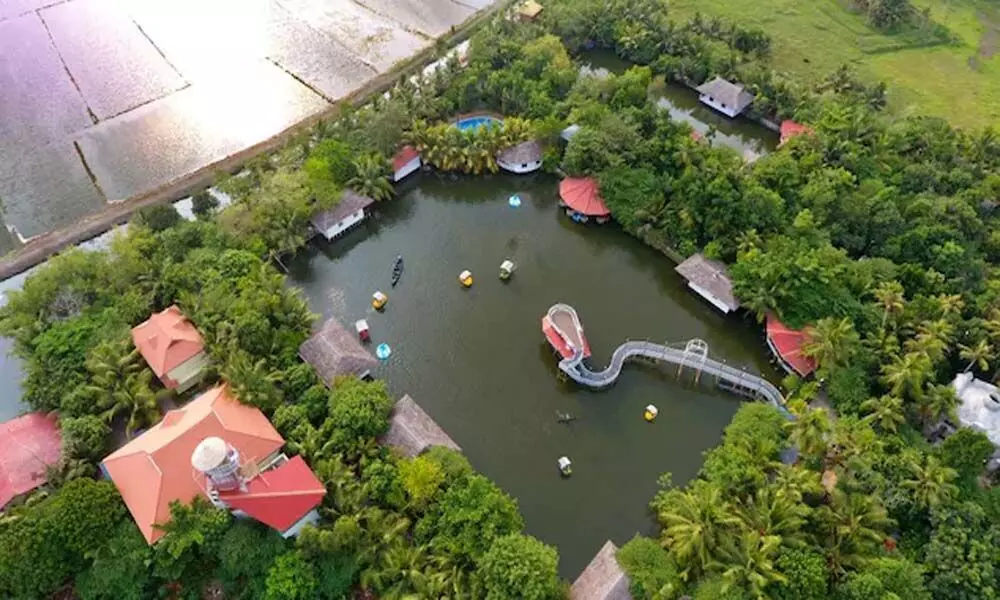

I had taken my longest vacation from work in past week for four days. It was really enjoyable, and I was planning to do that for a long time. Yet due to Covid lockdown and bunch of other things it was late.Also the planning part for the vaction was really interesting at the same time hectic. My initial plan was to visit a old palace ie Padmnapuram palace in Thuckalay, Tamil Naidu. Unfortunately, it didn’t work out.

So I pivoted my plan to stay in any hotel/resort. Before telling about the experience let me tell, what motivated me to take my vacation at the first place. It was an article by Randy Au who gave a really useful insight why taking vacation is important with a realistic angle. In the article the lessons on why we are not important to any organization and planning aspect is well covered. Randy Au answered my question on how to treat travelling as a hobby as well when I asked in a Twitter AMA.
I applied for four days of leave well in advance before planning where I am going to plan. Then I started my journey of hunting the perfect place to stay. After almost 20+ hotel enquiries and also trying to accomodate everyone in my family to come with me. The outcome was kind of final. Unfortunately not everyone in my family was willing to come with me except my mother. After a lot of searching we decided to book the hotel at Mango Meadows and set aside one day to travel with my family in Kochi(by spending time on shopping & a buffet dinner).
About the resort I stayed. Mango meadows resort is an excellent place and is an agricultural themed park. The place is filled with natural beauty and bought me closer to nature during the stay. Unlike typical resorts where you have just one small area, here you have 30 acres of land with lot of facilities like a amusment park. For me some of the memorable experiences during two day stay at Mango Meadows was swimming in pay pool, then cycling followed by bumpy ride in london metro. Staff were excellent and 5 stars review for the resort.
So was all the travelling really worth it? Back to work next day back I had lot of messages and 70+ emails to answer. This proved everything Randy said, and slowly one day I will also get better at vacationing. Also we started planning for our next big trip to Armenia which will materialize one day hopefully.